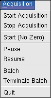
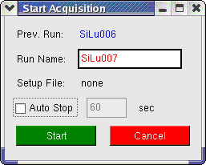

 |
ACQUISITION |
Start Acquisition: Starts acquiring CAMAC data from the experiment. Before doing that you should ensure that you have prepared a correct setup. However if you want to do a "quick start" and you have provided (upto 8) pulses on ORTEC AD413 ADCs located at CAMAC stations 10 and/or 13 you can start without any setup. This will start with both the ADCs operating in singles mode. If the CAMAC configuartion is different, acquisition is not possible without setup first. Note also that "Start Acquisition" is the normal way of starting while "Start (No Zero)" is explained below. On clicking Start Acquisition, the following dialog box appears:

In the above example, the program has automatically provided the run name "SiLu007" based on the name of the previous
run (SiLu006). The run name can be changed if desired. Clicking "Start" will start acquisition immediately. Based on
the run name, the files will be created accordingly. If list mode is on, the list file will be named
SiLu007.zls (SiLu007.001 if using NSC-Freedom/Candle format), the 1d spectrum files will be named
SiLu007001.z1d, SiLu007002.z1d and so on. The 2d files will be named SiLu007001.z2d,
SiLu007002.z2d etc.
If a list mode file or spectra files of the same name already exist, a warning box will appear.
The dialog also allows "Auto Stop" after a specified duration. (Useful in detector testing, source counting etc.). There is also a seperate Batch mode of acquisition (see below).
Stop Acquisition: Clicking this button stops acquisition immediately and without further warning.
Start (No Zero): Sometimes one wants to accumalate statistics in spectra over several runs. Clicking Start (No Zero) is similar to "Start" except that the spectra in memory are not erased before starting. Note that list mode files from different runs are always independent, only spectra files can be combined in this manner.
Pause: Causes a temporary halt in acquisition for an indefinite period. You could use this when e.g. there are problems with the beam. After "Pause" one must always "Resume". It is not possible to "Stop Acquisition" from the paused state. (Unfortunately this function does not pause the CAMAC scalers).
Resume: To continue acquisition after "Pause". Note that the program does not stop time accounting during pause periods. The (integral) data rates displayed are based on a clock that keeps running during the pause periods.
Batch: Begins the batch mode dialog, allowing to define a set of runs to be started and stopped automatically. See Batch Acquisition for details.
Terminate Batch: The current run and all the subsequent runs in the current batch are terminated.
Quit: To exit the program. The program will not allow this if acquisition or analysis is in progress.